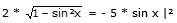

Aufgabe 259 2 cos x = - 5 sin x

4 * (1 – sin2 x) = 25 * sin2 x 4 – 4 * sin2 x = 25 * sin2 x | +4 * sin2 x 29 * sin2 x = 4 | :29 4 sin2 x = ---- |√ 29 sin x1,2 = ± 0,3714 sin x1 = 0,3714 --> x1 = 21,8° oder 158,2° sin x2 = - 0,3714 --> x2 = 338,2° oder 201,8° Da auf dem Weg zur Lösung quadriert wurde, könnten Lösungen hinzugekommen sein. Deswegen muss zwingend eine Probe gemacht werden. Probe: 21,8° 2 * cos 21,8° = -5 * sin 21,8° 2 * 0,9285 = -5 * 0,3714 1,857 = -1,857 Widerspruch, keine Lösung 158,2° 2 * cos 158,2° = -5 * sin 158,2° 2 * - 0,9285 = -5 * 0,3714 -1,857 = -1,857 Lösungsmenge L = {158,2°}